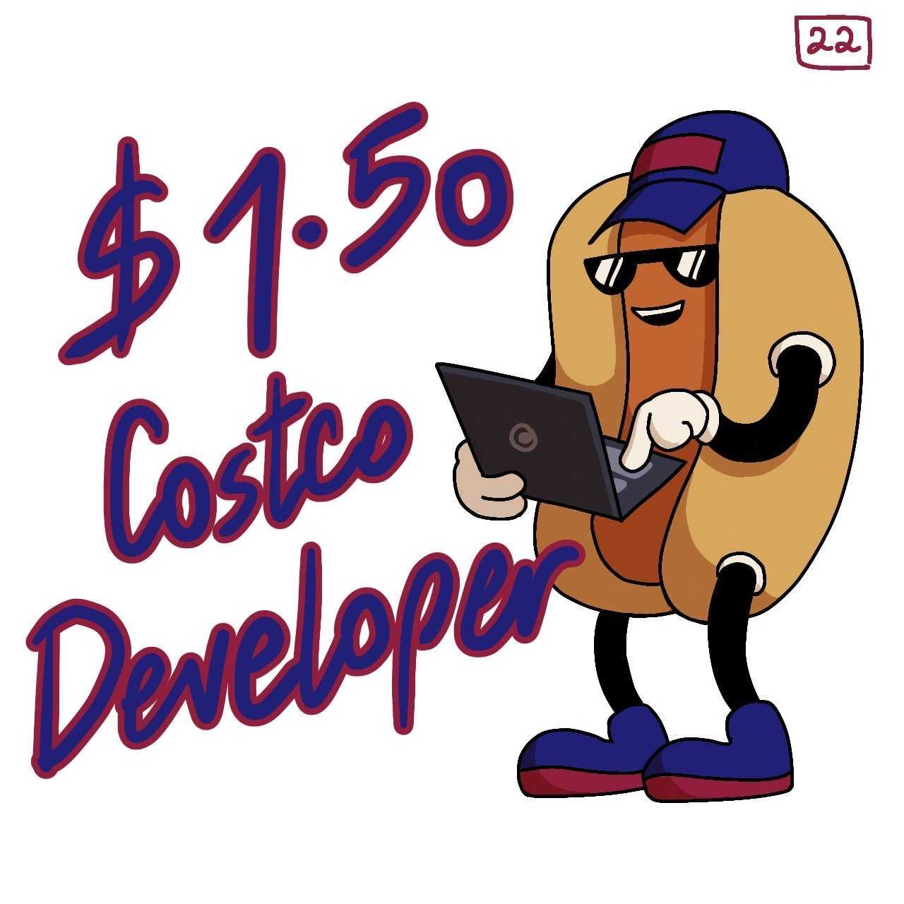

Kickoff Meeting - 4/11/2026
Meeting Details
Time: 10am - 11am
Type: Virtual through Google Meet
Attendance
Members Attended:
- Angel
- Dmitri
- Lucien
- Anirudh
- Sirtaj
- Kaung
Members w/ Communicated Absence:
- Brenda
- Sean
Members w/ Uncommunicated Absence:
- Sofia
- Yannis
- Benjamin
Agenda
- Team Branding
- Team Page
- Introduction Video
- Team Contract
Team Branding
The team color is red. The team mascot is a hot dog guy that Dmitri drew. This hot dog guy will be both on our team logo and will be our mascot. This icon will also be our Slack workspace logo.

Team Page
This task has been delegated to Kaung, who will reach out to all members in Slack to find a teammate for the page.
Introduction Video
Each member of the team will send a short clip introducing themselves. Anirudh will stitch these clips together in order to create the video.
Team Contract
The team went over the given conversation starters and brainstormed a few bullet points for each category. This contract will have an addendum in the future enumerating all of the group roles after we know what the project is and what the roles we need are.
Unfinished Business from Last Meeting
This was the first meeting, so there was no unfinished business.
New Business
All items listed in the agenda above are new business items introduced during this kickoff meeting.
Kickoff Recording
Video recording of the meeting:
Audio recording of the meeting:
TA Meeting - 4/16/2026
Meeting Details
Time: 1 pm - 1:30 pm
Type: Virtual (Zoom)
Attendance
Members Attended:
- Angel
- Dmitri
- Brenda
- Sofia
- Sean
- Ben
- Kaung
- Sirtaj
- Yannis
- Anirudh
Members Absent:
- Lucien (communicated that he had class ahead of time)
Agenda
- Introductions: name, year, major, contributions to assignments so far
- Goal of the meeting is to set expectations for project and class overall
Grading
Everyone gets an individual grade depending on communication, professionalism, contributions, and accountability.
Feedback
How is the team meeting?
Every Monday in person at Geisel during discussion time, Wednesdays during lab time as needed.
How has the week been?
Lots of assignments meant difficult deadlines for the team. It should be better going forward as we get used to the flow of things and as team leads get more used to delegation of tasks.
Have you talked about structuring the GitHub?
No. Ayla mentioned organizing branches based on features and subteams. Aim to discuss this on the 4/20 meeting.
Assign roles in the future
Will it be rotating roles? Subteams? To be discussed in the 4/20 meeting.
Future meetings with the TA will be mostly with the team leads only.
Questions
What is the project and when will it come out?
The TA can't say any details. They are all unsure about when the project will come out because it was supposed to come out in Week 2.
The next assignment is another warmup like the AI Slot Machine?
The TA does not know when it will be out but she expects latest by Monday.
What kind of tooling? Frontend/backend?
It is mostly what we are learning in lab (so frontend languages), but there are no guardrails on what exactly can be done.
How does the TA adding a new feature work?
The TA is not adding a feature, but code should be clean, maintainable, and well documented such that a new feature could be added.
Miscellaneous Comments
No additional comments or concerns were raised during this meeting.
Meeting Feedback Form
Please fill out this form to provide feedback on the meetings.